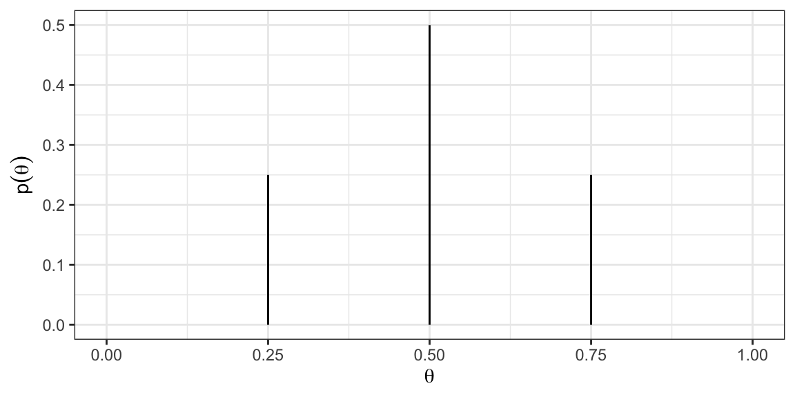

Bayesian Data Analysis
Inferring a Binomial Probability
Recall: Bayes’ rule
Given a set of observed data points \(y\) and a set of parameters \(\theta\), we write Bayes’ rule as
\[\underset{\text{posterior}}{P(\theta|y)} = \frac{\underset{\text{likelihood}}{P(y|\theta)}\underset{\text{prior}}{P(\theta)}}{\underset{\text{marginal likelihood}}{P(y)}}\] and as a proportional statement
\[\underset{\text{posterior}}{P(\theta|Y)} \propto \underset{\text{likelihood}}{P(Y|\theta)}\underset{\text{prior}}{P(\theta)}\]
We will now consider an example that will build some intuition for how prior distributions and data interact to produce posterior distributions.
What proportion of Earth’s surface is covered with water?
Estimating the Proportion of Water on Earth
Imagine you want to estimate how much of the Earth‚Äôs surface is covered in water. üåçüíß
üü¢ The Experiment: You throw a blow-up globe into the air, and wherever your index finger lands, you record an observation of either:
- Water üåä
- Land üåç
üîÑ Repeat this process multiple times, collecting a dataset of binary outcomes (water or land).
üìä Your Data: As you accumulate observations, you‚Äôll begin to estimate the proportion of the Earth that‚Äôs covered by water based on how often your finger lands on water.
This simple, hands-on experiment can give you an idea of the Earth’s water coverage!
Estimating the Proportion of Water on Earth
Water on the Globe Example
üéØ What is our goal? Estimate the proportion of water on the globe, denoted as Œ∏ (theta).
üìä What data do we have?
- Data Collected: L, W, L, L, W, W, W, L, W, W
- Total Throws: n = 10
- Water Observations: y = 6
üîç How do we perform Bayesian inference for Œ∏?
Model the Data: Choose a descriptive model for the data, known as the likelihood, which includes θ (the proportion of water).
Prior Information: Summarize existing knowledge about θ using a prior probability distribution.
Update with Data: Combine the prior with the collected data using Bayes’ rule to obtain the posterior distribution for θ. This refines our estimate of the proportion of water on the globe based on the evidence we’ve gathered!
Brief Recap: Types of Statistical Distributions
Different types of distributions are used to describe data (or parameters), here’s some examples:
Normal Distribution
- Description: Bell-shaped curve, symmetric around the mean.
- Example: Heights of people, IQ scores.
Binomial Distribution
- Description: Discrete distribution of the # of successes in a fixed # of trials.
- Example: Presence/absence of a disease
Poisson Distribution
- Description: Discrete distribution for the # of events in a fixed interval.
- Example: # of emails received in an hour.
Likelihood Function - \(p(y|\theta)\)
We have data: n = 10, y = 6. We now need a data model.
We’ll model this particular type of data using a Binomial Distribution.
Assumption: \(y\) follows a Binomial distribution with parameters \((\theta, n)\), where:
\[p(y|\theta) = c\theta^y(1-\theta)^{n-y} \text{ with } c = {n \choose y}\]
Explanation:
- \(p(y|\theta)\): The likelihood function shows the probability of observing y water outcomes out of n throws, given the proportion of water θ.
- \(c\): The combinatorial factor that accounts for the number of ways to choose y successes out of n trials.
Why This Matters: This function tells us how our observed data (water outcomes) relate to the parameter we want to estimate (θ).
Prior distribution - \(p(\theta)\)
Now that we’ve defined the data model, the next step is to establish a prior distribution over the parameter values.
Let’s start simple and assume \(\theta\) can only take on values k = \(0,0.25,0.5,0.75,1\).
Suppose that we believe that \(\theta\) is most likely to be 0.5 and we assign lower weight to \(\theta\) values far above or below 0.5.
A prior distribution incorporating these beliefs might look like:

Likelihood & Prior
Given that y = 6 and n = 10 with \(\frac{y}{n} = 0.6\), which \(\theta\) out of \(0,0.25,0.5,0.75,1\) do you expect to have the largest value of the likelihood function?
Posterior distribution - \(\underset{\text{posterior}}{P(\theta|Y)} \propto \underset{\text{likelihood}}{P(Y|\theta)}\underset{\text{prior}}{P(\theta)}\)
Changing prior assumptions (1)
Instead of the “triangular” prior let’s make a different assumption where we assume 0.75 is most likely and 0.5 is somewhat likely.
Changing prior assumptions (2)
Instead of the “triangular” prior let’s make a more uniform assumption. So for \(k = 0,0.25,0.5,0.75,1\), \(Pr(\theta = k) = 1/5\) (i.e., all are equally likely).
Marginal likelihood - \(p(y)\)
Recall: \[\underset{\text{posterior}}{P(\theta|y)} = \frac{\underset{\text{likelihood}}{P(y|\theta)}\underset{\text{prior}}{P(\theta)}}{\underset{\text{marginal likelihood}}{P(y)}}\]
What is \(P(y)\)?
\[P(y) = \sum_{\theta^*} P(y|\theta^*)P(\theta^*)\]
So for \(k = 0,0.25,0.5,0.75,1\), \(Pr(\theta = k) = 1/5\) (i.e., all are equally likely)
\(P(y) = p(y|\theta = 0)Pr(\theta = 0) + P(y|\theta = 0.25)Pr(\theta = 0.25) + \ldots = 0.073\)
To do this in R:
n_grid = 5
theta <- seq(0,1,length = n_grid)
p_y <- (1/n_grid)*(sum(dbinom(6, 10, prob = theta)))